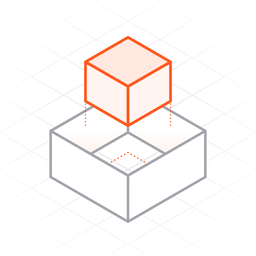

Privacy policy
Isometry · effective 25 October 2026
Isometry has no accounts and no ads, and it never asks for your name, email or anything else about you. To learn how many people play and which levels are too hard, it counts anonymous play statistics with Google Analytics for Firebase. Nothing is used to track you across other apps or websites, and the app never asks for or reads your device's advertising identifier.
Anonymous play statistics
Google Analytics for Firebase, a service of Google, receives these statistics from the app:
- That the app was opened for the first time, and how often and how long it is played
- The app version, the device model, the iOS version and the language
- Your general region, such as the country or city, which Google works out from a masked network address. The app never uses your location.
- When a level starts, and how it ends: its marks, folds and slips, and whether it was folded by the hinge or by hand
Each copy of the app is given a random identifier so the same player isn't counted twice. It isn't linked to you, your Apple Account or the advertising identifier. The app's advertising features are switched off: it sends nothing for ads, ad personalization or ad measurement. Google keeps the detailed records for at most 14 months; after that only totals remain. Google's own handling of the data is described in Google's Privacy Policy and How Google uses information from apps that use its services.
Game progress and settings
Your finished levels, their marks and your settings are saved on your device. If you're signed in to iCloud, your levels and marks are also kept in your own iCloud storage, so a new phone, an iPad or a reinstall picks up where you left off. Apple stores that copy for you, and no one else can see it. Deleting the app removes the copy on the device, and signing out of iCloud or turning off iCloud for Isometry stops the copy in iCloud.
The hinge on iPhone Duo
On iPhone Duo the game reads the angle of the phone's hinge while you play, to fold the flap you have chosen. The angle is used only on your phone, at that moment. It is never saved and never sent anywhere.
Checking for updates
Each time you open Isometry, it asks Apple's public App Store lookup service which version of Isometry is current. The request names the app and the store country, and nothing about you. If a newer version is out, the game asks you to update it from the App Store. Offline, the game simply plays on.
Ratings
After you finish a chapter the game may show Apple's own rating window, and the home page has a link to write a review on the App Store. Whatever you choose happens with Apple; the app learns nothing about it.
Children
Isometry is made for a general audience. It asks no one, of any age, for their name, contact details or age, and the anonymous statistics above are the same for every player.
Third parties
The app includes two libraries that connect to the internet. Siren makes the update check above, and its only request goes to Apple. Google Analytics for Firebase receives the anonymous statistics above. No other company receives anything from the app.
Contact
Questions about this policy: moazezz@icloud.com, or see the support page.
Changes
Any change to this policy will be posted on this page with a new effective date.